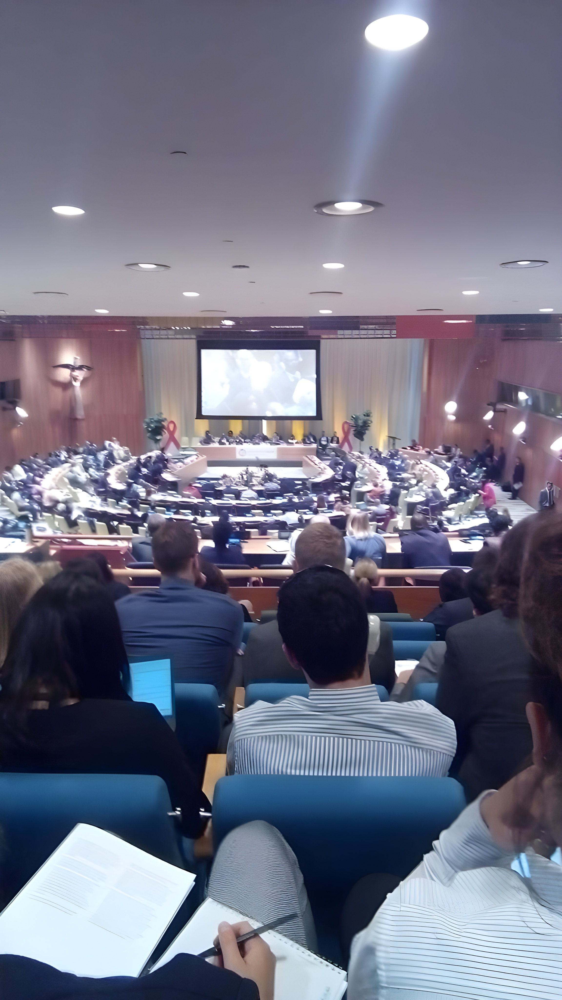

hoy nos ocupamos
Se llegó lejos, queda mucho por hacer
Lo que se viene: Nuevas Realidades y Oportunidades Globales
El futuro se dibuja con una complejidad fascinante y un conjunto de desafíos globales que parecen entrelazarse de maneras inesperadas.
 Fuente: https://ruralnet.com.ar/2024/01/08/el-agro-argentino-en-el-mundo-ranking-mundial-de-exportaciones/En primer lugar, Argentina está viendo el crecimiento de empresas líderes mundiales de tecnología que están comenzando a posicionarse como actores claves en la innovación global. Estas compañías están impulsando un cambio en el sector tecnológico local, abriendo oportunidades en áreas como la inteligencia artificial, la ciberseguridad, y la digitalización de procesos, lo que fortalece el potencial de crecimiento en industrias emergentes.
Fuente: https://ruralnet.com.ar/2024/01/08/el-agro-argentino-en-el-mundo-ranking-mundial-de-exportaciones/En primer lugar, Argentina está viendo el crecimiento de empresas líderes mundiales de tecnología que están comenzando a posicionarse como actores claves en la innovación global. Estas compañías están impulsando un cambio en el sector tecnológico local, abriendo oportunidades en áreas como la inteligencia artificial, la ciberseguridad, y la digitalización de procesos, lo que fortalece el potencial de crecimiento en industrias emergentes.
En 2024, Argentina se consolidó como líder mundial en la exportación de aceite de soja y recuperó el primer puesto en harina y pellets de soja. Mantiene su relevancia en la exportación de porotos de soja y aumentó significativamente sus exportaciones de maíz, con 2,8 millones de toneladas en octubre. Aunque no lidera las exportaciones de trigo, sigue siendo un actor clave en el mercado global. Estos resultados reflejan su competitividad en el comercio agrícola internacional.
Con la reciente victoria de Donald Trump en las elecciones presidenciales, el panorama político y económico mundial podría experimentar un giro hacia políticas más proteccionistas y centradas en los intereses nacionales de los Estados Unidos. Este cambio podría traer consigo nuevas dinámicas en el comercio internacional, así como un reajuste en las relaciones exteriores con aliados y adversarios, alterando el equilibrio geopolítico global.
Por otro lado, la caída de Siria, está dejando una estela de consecuencias tanto políticas como sociales que impactarán a toda la región y al mundo. La inestabilidad geopolítica en este sentido podría generar una reconfiguración de alianzas y un mayor enfoque en la seguridad internacional.
El Jubileo de 2025 será una ocasión para que los católicos peregrinen a Roma, especialmente al Vaticano, y participen en las ceremonias litúrgicas que se llevarán a cabo. Siendo un evento simbólico que marca una oportunidad para reflexionar sobre el pasado y, al mismo tiempo, para renovar compromisos hacia un futuro más justo y próspero y suele mostrarse como catalizador para nuevas reformas y movimientos de cambio, tanto en sociedades como en gobiernos.
Los desafíos globales actuales incluyen la carrera tecnológica, la sostenibilidad, la política y gestión gubernamental, la inclusión social para reducir desigualdades y asegurar el acceso a oportunidades, y la ética en la toma de decisiones, especialmente en el uso de nuevas tecnologías y en la gestión de recursos y poder.
Modalidad de Trabajo y Objetivos Estratégicos
Nuestro enfoque de trabajo se basa en un esquema dinámico y estratégico que permite adaptarnos a las demandas actuales y a los desafíos emergentes en nuestros campos de interés.
Este flujo de trabajo tiene como eje principal una revisión diaria de los temas relevantes, identificando tendencias, oportunidades y áreas de interés estratégico que se alinean con nuestros objetivos. Este análisis constante nos proporciona una base sólida para actuar con precisión en el corto y mediano plazo, mientras mantenemos una visión clara y ambiciosa hacia el largo plazo.
Participamos activamente en eventos pertinentes y relevantes, seleccionados por su potencial para fortalecer nuestras capacidades, ampliar nuestras redes de colaboración y posicionarnos en áreas clave. Cada año, nos integramos en espacios que consideramos esenciales para el desarrollo de nuestras iniciativas y para contribuir con aportes significativos en los ámbitos donde nuestra experiencia puede marcar una diferencia. Nuestra participación en estos eventos no solo responde a invitaciones estratégicas, sino también a nuestra capacidad para identificar oportunidades valiosas que fortalezcan nuestra preparación y consolidación en temas prioritarios.
Actualmente, hemos definido objetivos concretos que guían nuestras acciones. Entre ellos, destacamos nuestra intención de participar en eventos relacionados con ciberseguridad y gestión gubernamental, áreas que consideramos críticas para el fortalecimiento de estructuras y la mejora de procesos en contextos contemporáneos.
En el ámbito de la ciberseguridad, buscamos profundizar nuestro conocimiento, compartir buenas prácticas y contribuir a un ecosistema más seguro y resiliente, en línea con las demandas globales. Por otro lado, en la gestión gubernamental, nuestro interés radica en promover soluciones eficientes, confiables y ajustadas a las necesidades actuales, ofreciendo perspectivas innovadoras y basadas en la experiencia.
Atención a los cambios y sondeo constante
Entendemos que se debe permanecer atento a las dinámicas del mundo actual en cambio constante.

La participación en estos eventos y espacios se convierte en una plataforma para convocar a actores clave que buscan opciones confiables y prácticas, tanto para implementar gestiones efectivas como para impulsar proyectos que transformen sus entornos de manera productiva. Nos orientamos hacia la identificación de necesidades específicas, y trabajamos en construir puentes que faciliten la cooperación y el desarrollo conjunto.
Nuestro compromiso con la investigación constante y la preparación nos permite mostrar nuestras capacidades en los escenarios adecuados, optimizando nuestra presencia y fortaleciendo la relevancia de nuestras contribuciones. Este pipeline estratégico es la base que nos permite brindar un aporte oportuno y efectivo, impulsando iniciativas de alto impacto en los sectores en los que operamos.
En suma, nuestra modalidad de trabajo combina una estructura clara con la flexibilidad necesaria para adaptarnos a contextos cambiantes. Esto nos posiciona como actores activos y comprometidos con el desarrollo de soluciones estratégicas en áreas prioritarias, asegurando un aporte significativo y sustentable para quienes confían en nuestra visión y capacidades.